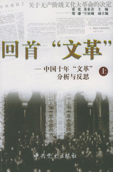
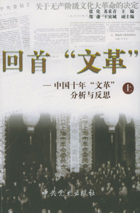

1966年开始的文化大革命，导致中国政局变动，带来许多经济和文化上的损失，处于大好时期的中国动画也陷入了低谷，也是一大遗憾吧，中国动画整整损失了十年的时间。

在这一背景下上海美术电影制片厂制作了不少具有教育目的的儿童动画片，从内容的写实到立意的刻意性，这些作品直接导致了中国动画的低龄化发展，也间接影响了人们对中国动画的印象。
国漫崛起——国漫的发展历史
1966年开始的文化大革命，导致中国政局变动，带来许多经济和文化上的损失，处于大好时期的中国动画也陷入了低谷，也是一大遗憾吧，中国动画整整损失了十年的时间。
